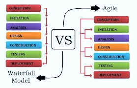
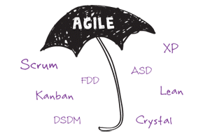

Agile Technology
Software Developement
Created by K.ArunGanessh / K.dinesh
INTRODUCTION
* Why Agile?
* Agile Manifesto and Principles
* What's Methodology and why?
* Methodologies that promote agility
* Conclusion
Agility
* Quickness
* Swifness
What's Agile means?
- Lightweight helps us adapt and move
- Sufficient recognizes our ineffectiveness to be complete and relies on strong communication
Software Development Using Agile
* Relatively nascent field in comparison
* Machines are getting faster or more
powerful
* Are we getting better in delivering
software applications though
Success or Failure ???
* Less than 10% of software projects
meet failures in Agile Technology
* Criteria for success?: On time, within
budget, feature complete, works (failure
free) Concave -
Zoom
Concave -
Zoom
WATERFALL VS AGILE MODEL

WaterFall Process-Downtrodden
* Waterfall approach4
- Actually specified iteration - largely ignored
* Customer's mind is not frozen after they
give us the requirements

Waterfall Drowntrodden Steps
* The Customer tells how should be the project
* How the project manager understood it
* How the analyst designed it.
* How the programmmer made it.
* How the Consultant described it.
* What operation was installed.
* How much was cost
* How it was supported
* Atlast how it was delivered to customer
Project Management Comparasion

*In Traditional Feature is only fixed & Quality,Cost,Time can be changed
Agile Development Process
- Iterative and evolutionary development
- Timeboxing
-Set amount of time for iteration
-Adapt future iteration based on the realities - Adaptive planning
- Incremental delivery
- Agility
- More focused on success than sticking with a plan
- Working software is valued and considered measure of progress
Agile Methods
METHODOLOGIES
- Extreme Programming(XP)
- SCRUM
- EVO
- UP
- CRYSTAL
- LD
- ASD
- DSDM
COMPARASION OF TOP METHODOLOGIES
| XP | SCRUM | EVO | |
|---|---|---|---|
| ITERATION | 2/3weeks | 30days | 5days |
| Customer Participation | strong | strong | Very Strong |
| Business Process | Medium | High | Too High |
Advantage Of Agile
- COST
- Too little, does not solve problems
- Too much, some times more of a problem - TIME
- More time can improve quality and increase scope.
- Too much time hurts as well - Quality
- Sacrificing this may result in short term gains
- Over the long haul, lost is enormous
- Scope- Lesser the scope, better the quality
- You can deliver sooner as well
- Assuming it meets the business needs - Communication- Communicate critical change in requirements, design, etc.
- Put in place practices that will enhance communication - Simplicity- Find simplest thing that will work
- Build some thing simple today and pay a little to change tomorrow than build some thing complicated today that may never be used